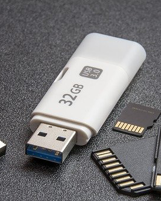
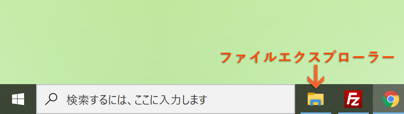
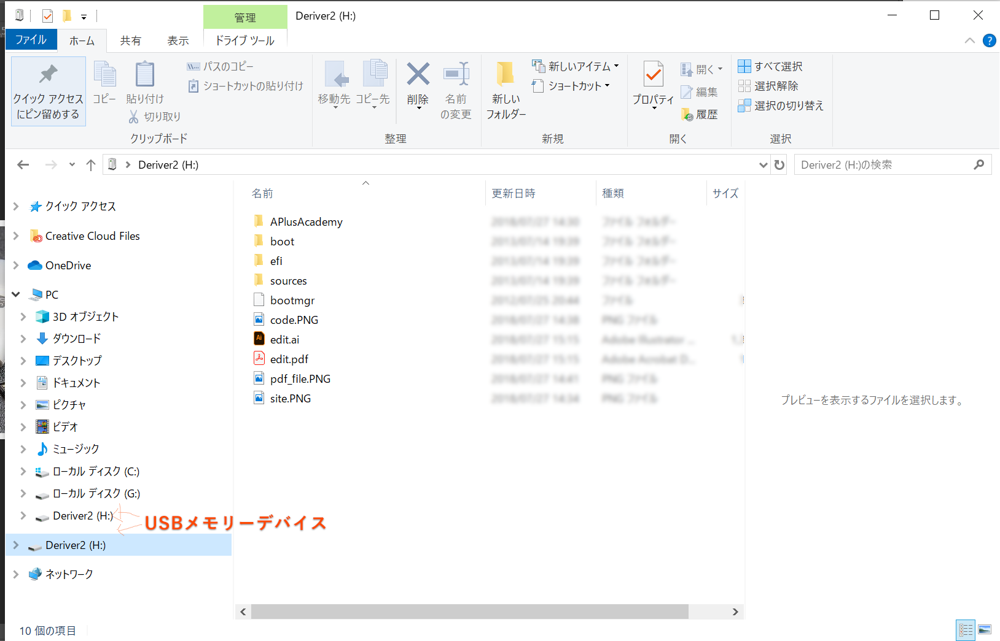

USBメモリーデバイスの使い方 - コンピューターの基本操作
category: コンピューターの基本操作
USBメモリーデバイス（以下 USBメモリー）は安価で軽く多くのデータを持ち運べる便利な媒体です。
しかし
USBメモリーはウイルスを媒介しやすい媒体です。
お財布に余裕があるかたは新規での購入をおすすめします。
もしくはUSBメモリーに何も保存されてない状態にして（フォーマット）して学校ではご利用ください。

コネクトのしかた
USBメモリーは背後にあるコネクターに指します。
差し込みには向きがあり無理に押し込まないようにしてください。
サンダーボルトコネクターに似ていますので間違えないでください。
iMacの基本
※キーボードの左右にもありますが若干背面のコネクターのほうがアクセスは早いです。
iMac以外のPCの場合
おのおののPCのUSBコネクターの位置を目視で確認してください。
USBの中身をみる MAC
コネクトするとメディアアイコン(ボリュームアイコン)がでます。
これをfinderで開くと中身の操作ができます。
デスクトップに表示されていない場合、finderの設定を変える必要があります。下記リンクが参考になります。
finder をアクティブにしてメニューバーの左側＜finder＞から＜環境設定＞を選ぶ。
＜一般＞タブから＜デスクトップに表示する項目：＞ の＜外部ディスク＞にチェックが入っているか確認してください。
USBの中身をみる Windows10
windowsはファイルエクスプローラーをタスクバーから立ち上げる。

左側の列にあるDEVICEまたはドライブを選びます。

外すとき
注意: そのまま抜いてはいけません。
保存中など処理中の場合最悪データが破損してつかえなくなります。
USBメモリーのアクセスランプの点灯がなくなってからぬきましょう。
データが破損した場合、すぐに復旧はできないです。多くの時間を費やしたデータを無に帰さないよう注意ねがいます。
外しかた。
外し方はMacとwindowsでは若干の違いがあります。
- MACの場合はDockのゴミ箱アイコンにドラック&ドロップ
- windowsおよびMacはコンテキストメニュー（右クリック）から「デバイス（ドライブ）を外す」を選択してください。
上記何れかの作業をしてアクセスランプの点灯が終わってからUSBを優しくぬきます。
USBメモリーので保管と作業での注意
毎日朝必要な作業データをUSBメモリーからデスクトップに移動して、編集はHDをに保存（コピー）されたファイルを開いて編集すること
帰りの支度はデスクトップにある作業データをUSBメモリーに保存して。安全に抜いてから帰宅してください。